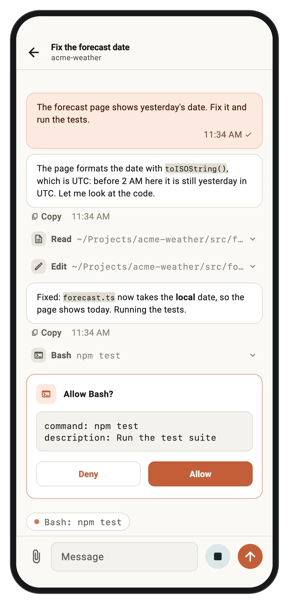
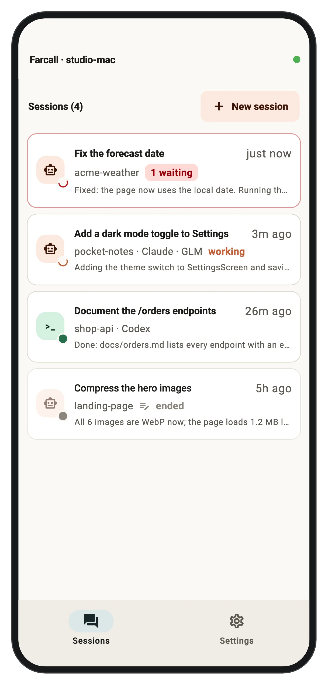
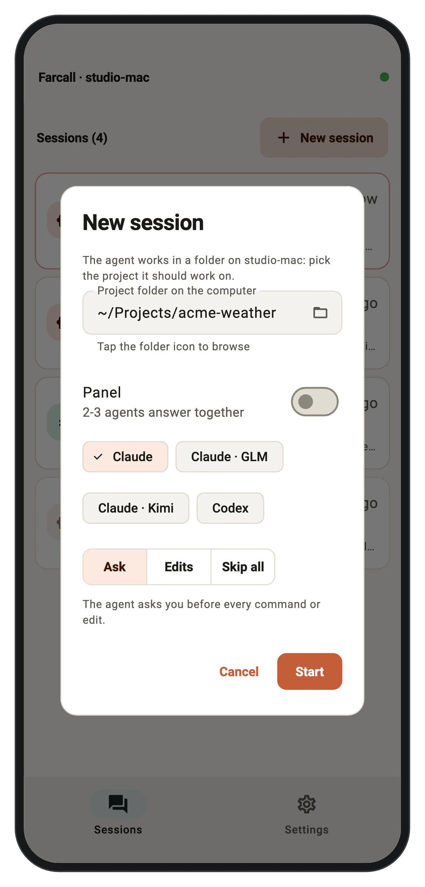
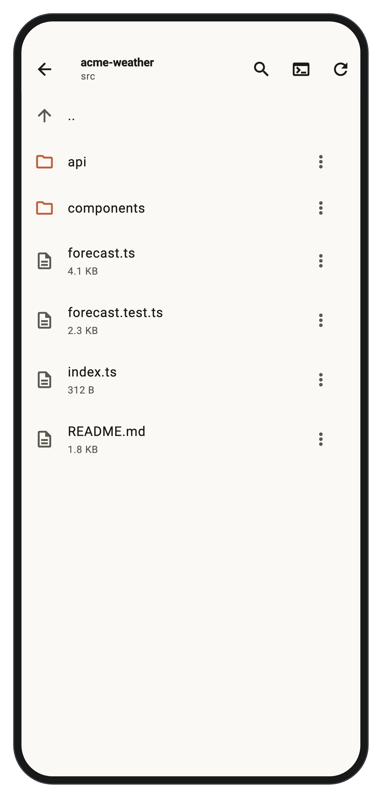
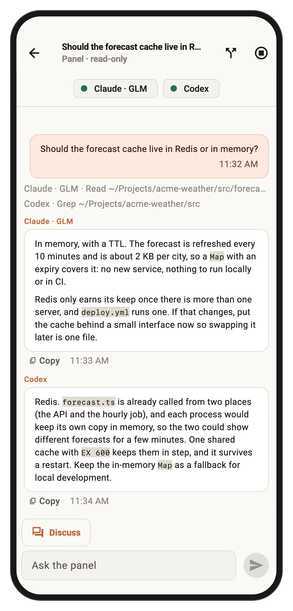
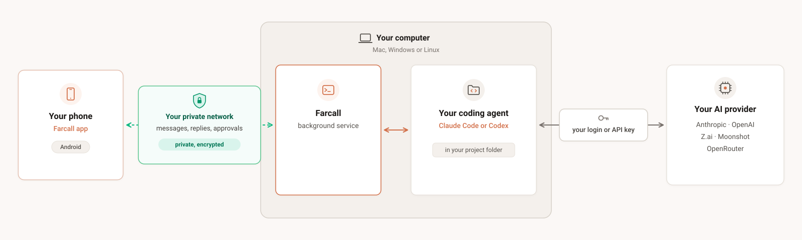
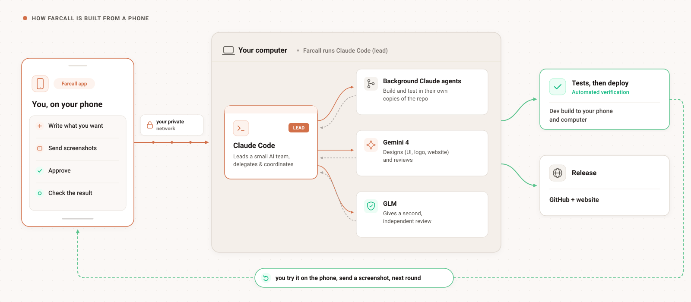

Ship from your phone.
Your AI agents run on your computer: Claude Code, Codex, GLM, Kimi, whichever you use. You direct them from anywhere: say what you want, send a screenshot, check the result, ship it. Your code never passes through Farcall’s server, and your phone tells you when the agent finishes or needs you.
Mac (Apple Silicon), Windows and Linux on the computer · Android on the phone · iPhone not yet · Another coding CLI? Tell us which one





Direct from your phone to your machine

Farcall is built from a phone, with Farcall
Release 111 was built in one day from my phone: 89 messages sent from the phone, from the first request at 09:24 to the published release at 16:18. Claude Code on my computer led the work; Gemini 4 designed and reviewed it, GLM gave a second review, and I tried every build on the phone before it shipped. On 19 and 20 October a whole-repo review and its 39 fixes, 13 phone builds and three public releases were done the same way, from the phone, including the bug that froze the video player's clock, found by watching the log the phone sent.

On a phone, swipe the diagram sideways.
Built for high-trust local workflows
Your agent, your model
Claude Code on your Claude login, or on Z.ai's GLM or Moonshot's Kimi; Gemini through OpenRouter (preview). Codex on your OpenAI login (preview). Pick per session.
It tells you when it needs you
A notification when the agent finishes, with the end of its reply, or when it has a question you answer with a tap. Want it to ask before commands and edits? It does by default.
Your code never passes our server
Sign in with Google on both, and your phone reaches your computer over a private, encrypted network built into Farcall: no Tailscale app, no QR code. Chats and code stay on your machines.
More than one agent
Put two or three agents in one chat: they answer side by side and can discuss each other's answers. Update your computer's Farcall from the phone, too.
Your files, a terminal, your videos
Browse and read the files the agent changed, search a folder, run a command in it, or download a file to the phone. Play a video from the computer: Farcall converts what the phone can't play, with your subtitle and audio track.
Works without a signal
Your sessions and recent chats are saved on the phone, so they open at once, even offline. A message typed with no network waits and goes when one is back. A notification tells you when the agent is waiting for you.
When you'd reach for it
The agent runs on your own computer, with your files, tools and logins, and does the typing. So a phone is enough to drive it: you say what you want and check what it did. It works with your Claude login or with keys for GLM, Kimi or OpenRouter.
Start it, then walk away.
"Run the tests and fix what fails." Go make tea. When the agent wants to run a command, your phone asks, so the work doesn't stop and wait for you to get back to the desk.
A bug you found on your phone, fixed from your phone.
Screenshot the problem, send it to the agent working on that app, check what it changed, then install the build it makes. Farcall is built this way; see how.
"Why is this broken?" from anywhere.
The agent reads the logs and the code on your computer and tells you what went wrong. Nothing gets pasted into a chatbot.
Not just code.
Farcall's developer keeps a fitness log in a git repo: a photo of a meal before eating it, a note after the gym, and the agent writes it into Markdown. In use 10 of the last 14 days, and no fitness app was ever built for it.
Why not SSH and tmux?
You can. Farcall is for when you'd rather not type in a terminal on a phone keyboard: a notification when the agent is done or waiting for you, photos and files straight into the chat, and answers as buttons.
Keep the memory in the repo
Phone sessions work best when you don't have to scroll back to remember where you were. Have the agent keep its state in git:
- a
CLAUDE.md(orAGENTS.mdfor Codex) with the project's rules - a short status file it updates at the end of a session
- commit messages that say why, not just what
- push, so any session on any computer starts where the last one stopped
Then five minutes from your phone picks up where yesterday left off.
Not for: writing code by hand on a phone, or reviewing a big diff (that's still desk work). The computer must be on and reachable: Farcall keeps it from idle-sleeping, but a laptop closed in a bag is out of reach. Android only for now; iPhone: not yet.
Get started
-
Install Farcall on the computer.
Mac (Terminal):
curl -fsSL https://github.com/eamon831/farcall-releases/releases/latest/download/install.sh | bashWindows (PowerShell):irm https://github.com/eamon831/farcall-releases/releases/latest/download/install.ps1 | iexLinux (x64):curl -fsSL https://github.com/eamon831/farcall-releases/releases/latest/download/install-linux.sh | bash - Follow the setup in the Farcall window: Connect (sign in with Google), Pick your AI (sign in or paste a key), Projects folder, Connect your phone.
- Install the Android app from the QR code in setup and sign in with the same Google account. Your computer shows up by itself: no code to type. To get a friend started, Settings › Share app sends them the app over WhatsApp or Bluetooth.
Questions
Can I use Claude Code from my phone?
Yes. Farcall runs Claude Code on your own computer and gives you a phone app to chat with it: start a session in a project, read replies as they stream, get a notification when it's done or needs you, and approve commands if you want it to ask first. More on Claude Code from your phone.
Does it work with Codex, GLM, Kimi or Gemini?
Yes. Claude Code can run on your Claude login, on Z.ai's GLM, on Moonshot's Kimi, or on Gemini through OpenRouter (preview); Codex runs on your OpenAI login (preview). You pick per session, and you can put two or three agents in one chat. More on Claude Code with GLM or Kimi, or Codex from your phone.
How is it different from Anthropic’s Remote Control?
Remote Control is Anthropic's own phone link for Claude Code, and it's good at that. Farcall differs in three ways: Claude Code also runs on GLM, Kimi or OpenRouter (Remote Control accepts only Anthropic's API), Codex sits beside it in the same app, and nothing has to stay open on your computer, because Farcall runs as a background service.
Is my code sent to a server?
No. Your phone reaches your computer over a private, encrypted network built into Farcall. Farcall's server only signs your devices in and helps them find each other; your code and chats stay on your machines and your AI provider.
What do I need?
A Mac (Apple Silicon), Windows PC or Linux machine to run the agent, an Android phone, and one AI: a Claude account, an API key for GLM, Kimi or OpenRouter, or Codex. Farcall's setup installs what is missing.
Is there an iPhone app?
Not yet: the phone app is Android only for now.
Does it drain my phone's battery?
It keeps one connection to your computer open so approvals and replies reach you while Farcall is closed, and that uses some battery. If you would rather not, turn off Settings › Background connection: Farcall is then connected only while it is open, and you get no notifications while it is closed.
Which languages does it speak?
English and Bengali. On the phone, pick one in Settings › Language; the computer's window follows your system language.
Is Farcall free?
Yes, Farcall itself is free to download. You pay your AI provider as you normally would.
Does Farcall collect anything?
No chats, no files. Signing in keeps your Google email and your devices' names on Farcall's sign-in server. If the app crashes, a scrubbed crash report goes to Sentry; and under the same switch the app and the computer count their use under a random id, so we can tell how many people use Farcall. Both are on by default and switch off together in Settings. Details on the privacy page.